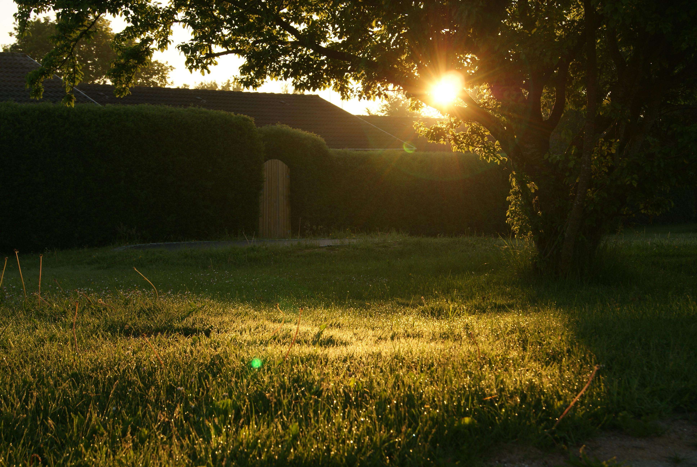
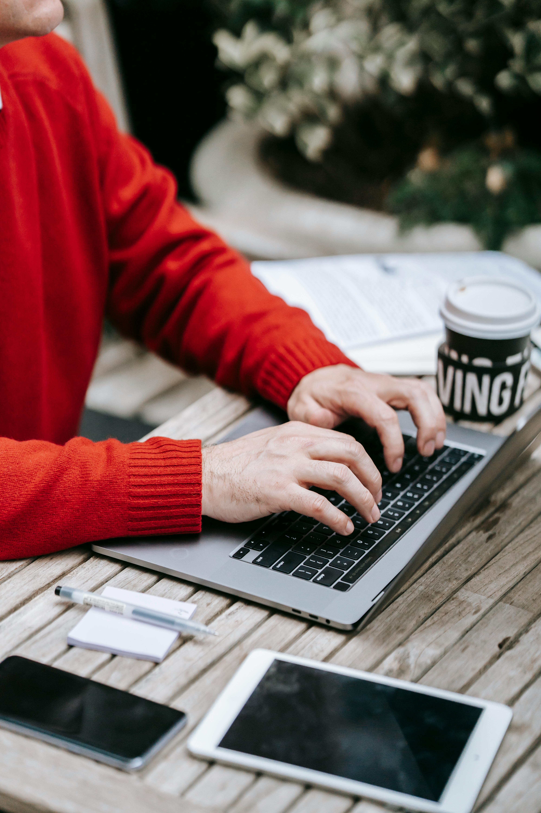
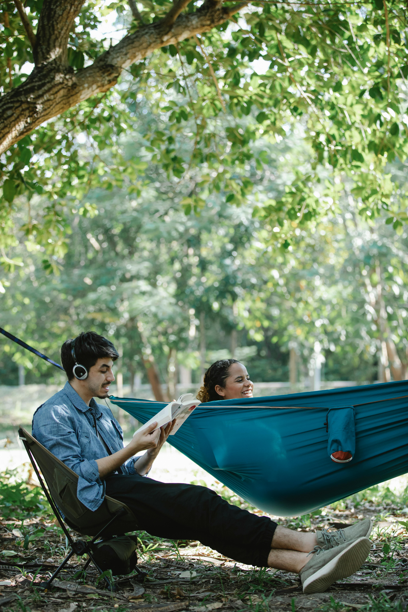

The digital nomad lifestyle is a modern way of living where people work remotely while traveling to different places around the world. Digital nomads use technology and the internet to complete their jobs from anywhere, such as cafés, co-working spaces, or hotels. This lifestyle offers freedom, flexibility, and the opportunity to explore new cultures while maintaining a career. Many digital nomads work as freelancers, online business owners, programmers, designers, or content creators.
Digital nomads often start their day with a morning routine that includes activities like meditation, exercise, or journaling. They may also check their emails and plan their work for the day. Many digital nomads prefer to work in the mornings when they are most productive and focused.

Digital nomads can work from various locations, such as co-working spaces, cafés, or even beaches. They often use laptops, smartphones, and other digital tools to stay connected with clients and colleagues. The flexibility of their work environment allows them to choose places that inspire creativity and productivity.

In their leisure time, digital nomads enjoy exploring new cultures, trying local cuisines, and engaging in outdoor activities. They often take advantage of their location to experience unique adventures and meet new people. This balance between work and leisure is a key aspect of the digital nomad lifestyle.

In the evenings, digital nomads may unwind by reading, watching movies, or spending time with fellow travelers. They might also reflect on their day, plan for the next day, or engage in creative pursuits. This downtime is essential for maintaining a healthy work-life balance.
| Activity | Time Spent | Location |
|---|---|---|
| Work | 6 hours | Café |
| Leisure | 4 hours | Beach |
| Sleep | 8 hours | Hotel |